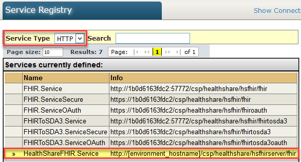
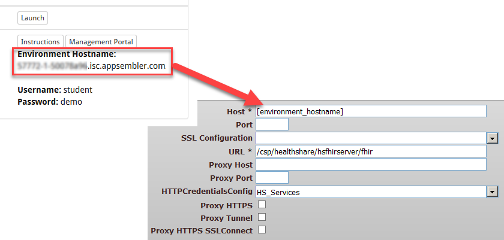

Main Exercise: CDA to FHIR® via SDA
Introduction
In this exercise we will transform an HL7 CDA document into a FHIR bundle and submit it to a FHIR resource repository via REST. First, we will use the built-in HealthShare XSLT transforms to convert the input CDA (C-CDA v1.1) to SDA. Then we will convert the SDA output from that transformation to a FHIR bundle using the HealthShare SDA-to-FHIR DTL pipeline.
Goals
By the end of this exercise, you should be able to:
- Identify how HealthShare handles CDA-to-SDA conversion
- Identify how the SDA-to-FHIR DTL pipeline works
- Use a REST client to retrieve FHIR resources
- Customize the DTL pipeline
- HSFHIR - A sample FHIR client production for generating RESTful FHIR requests and submitting them to a FHIR server
- HSFHIRSERVER - Represents HealthShare's FHIR Resource Repository, capable of receiving RESTful requests from FHIR clients
Configure CDA-to-SDA Transformation Process
Workshop.CDAtoSDA has already been added into the production and partially configured. This is a sample business process that transforms CDA input into SDA. We will finish configuring this component to send the SDA output to the right business process for conversion to FHIR.
1. In the Management Portal, navigate to: Ensemble > HSFHIR > Configure > Production.
2. Select Workshop.CDAtoSDA.
3. In the right-hand pane of the window, set the following:
- TargetConfigName: HS.FHIR.FromSDA.DTL.Transaction.Process
4. Click Apply.
Workshop.CDAtoSDA makes use of built-in XSLT transforms in HealthShare (CCDA-to-SDA.xsl, in this case) for converting between CDA and SDA. Looking under the hood, it's a very simple class with just a few lines of code, centered around the following line:
Configure FromSDA DTL Process
HS.FHIR.FromSDA.DTL.Transaction.Process is a built-in business process that converts SDA into a FHIR resource bundle. This business process has already been added into the production and partially configured. We will now finish configuring this component.
1. Select HS.FHIR.FromSDA.DTL.Transaction.Process.
2. In the right-hand pane of the window, set the following:
- TargetConfigName: HS.FHIR.REST.Operation
- TransmissionMode: transaction
- FHIRFormat: XML
3. Click Apply.
Configure HS.FHIR.REST.Operation
HS.FHIR.REST.Operation has already been added into the production and partially configured. This is a built-in component for sending out FHIR Requests via REST. We will finish configuring this component by specifying where to send the FHIR Requests.
1. Select HS.FHIR.REST.Operation in the production. Set the following:
- ServiceName: HealthShareFHIR.Service
- FHIRVersion: 1.0.2
2. Click Apply.
3. Configure HealthShareFHIR.Service in the Service Registry (in the HSFHIR namespace).
- Navigate to: Home > HealthShare > Service Registry.
- Set the Service Type dropdown to HTTP and select HealthShareFHIR.Service in the table.
 - In the bottom pane of the window, set the Host field to the Environment Hostname value (e.g., xxxxx-xxxxx.staging-isc.appsembler.com) as specified on the lab launch page.
 - Verify that Port is blank and URL is set to /csp/healthshare/hsfhirserver/fhir.
- Click Save.
Process CDA Input
You will now test the entire data pipeline, which processes a CDA document (C-CDA v1.1) into a FHIR bundle transaction.
1. On the lower left of this page, open HSFHIR/CDA and copy and paste ccda.xml into HSFHIR/CDA/Input using the Edit menu item.
2. Refresh the page. When the file disappears from the Input directory, switch to the Management Portal.
3. Navigate to: Home > Ensemble > View > Messages.
4. Refresh the page until the status on the most recent message in your production changes from Delivered to Complete.
5. Select the number in the Session column to view the message's Visual Trace.
- Examine the warnings. What do you think they mean?
- Examine the HS.Message.ECRUpdateRequest message produced by the Workshop.CDAtoSDA process. What does this message contain?
- Examine the Payload on the outgoing Request message sent to HS.FHIR.REST.Operation. Can you identify different FHIR resources that are contained in this FHIR bundle?
You may extend the DTL logic to accommodate data types not included with the product or to modify existing behavior; we will do that in a later step.
6. Examine the Response message from the FHIR Server. Please note that each FHIR resource appearing in the Response message now has a unique fullurl value assigned by the FHIR Server.
7. Select the View Full Contents link in the right-hand panel. This opens a separate page containing only the Response message content. Please leave this page open on the screen, as we will be making use of it in the subsequent steps.
Change the Output of the Payload (Optional)
HS.FHIR.FromSDA.DTL.Transaction.Process has a property on it called FHIRFormat which allows you to easily change the payload format on your pipeline.
1. Open the Management Portal.
2. Navigate to: Ensemble > Configure > Production.
3. Select HS.FHIR.FromSDA.DTL.Transaction.Process in your production.
4. In the right-hand pane of the window, set FHIRFormat to JSON and click Apply.
5. Repeat the Process CDA Input section of this exercise to test the entire pipeline again, this time with JSON being the payload format.
Also note that the receiving server does not care whether it receives XML or JSON. This is a requirement of the FHIR specification; all servers MUST handle both XML and JSON.
Install and Launch Chrome Advanced REST Client
We will use a REST client to query the FHIR Server. This exercise uses the Chrome Advanced REST Client as an example; however, please feel free to use any other REST client of your choice.
1. Navigate to the Advanced REST Client app using Chrome.
2. Install and launch the app.
Query the FHIR Server for Patient Resource
In the Process CDA Input section of this exercise, we converted a CDA document into a FHIR bundle and posted it to our sample FHIR Server via REST. In this section, we will use an external REST client application to query the FHIR Server (FHIR Resource Repository) for FHIR resources previously posted.
1. Revisit the Response message's Full Contents page from the Process CDA Input section.
2. Locate the Patient resource in the message payload and copy its fullurl value (e.g., http://<hostname>/csp/healthshare/HSFHIRserver/FHIR/Patient/1)
3. Open Chrome's Advanced REST Client.
4. In the REST Client window, set the URL to the Patient fullurl value that you just copied.
5. Add a new header called Authorization and construct its value with the following user credentials:
- Username: HS_Services
- Password: HS_Services
6. Add a new header called Accept and set it to application/xml+fhir.
7. Ensure that the transaction type is GET.
8. Click Send.
9. Examine the Response message containing the requested Patient resource.
10. Change the Accept header to application/json+fhir and click Send. The Response message now contains the same Patient resource expressed in JSON.
11. Modify the URL by appending /$everything to the end.
12. Click Send and notice that the $everything operation returns the Patient resource as well as all the other resources related to the given patient.
13. (Optional) Now, look through the Full Contents page again for different fullurl values and try querying for other resources, such as Condition and Encounter.
Customize the DTL Transform Process (Optional)
The DTL pipeline is designed to be extremely customizable, in order to accommodate additional resource support, variations in use cases, and support of extensions. Both individual resource DTLs as well as the overall message DTL can be overridden with custom versions. To create a custom DTL, you copy the desired DTL from the base HS.FHIR.DTL.FromSDA package to your desired custom package and modify as needed. We will now do this.
1. In the Management Portal, open the Data Transformation Builder in the HSFHIR namespace (Ensemble > Build > Data Transformations).
2. Open the DTL, HS.FHIR.DTL.FromSDA.Encounter.
3. Click Save As. Change the Package to <yourname>.FHIR.DTL.FromSDA.
4. In your new DTL, expand the text property on the target message.
5. Select div.
6. In the -Add Action- dropdown menu at the top, select set.
7. Set the Value of the assign operation to "<p>GLOBAL SUMMIT IS AWESOME</p>"; make sure you include the quotes.
8. Expand the language property.
9. Set value to "en-us"; again include the quotes.
10. Compile your DTL.
11. Navigate back to your production.
12. Select HS.FHIR.FromSDA.DTL.Transaction.Process.
13. Set the CustomDTLPackage field to <yourname>.FHIR.DTL.FromSDA and click Apply.
14. Repeat the Process CDA Input section of this exercise. Note the difference in the output from the process.
Bonus Exercise: HL7 v2 to FHIR Message Mapping
Introduction
In this bonus exercise, we will do a basic mapping of an HL7 v2 ADT_A01 message to a FHIR message using DTLs.
Goals
At the end of this exercise, you should be able to:
- Identify the location and structure of the HL7 FHIR Wiki
- Understand how HS.Message.FHIR.Request messages are structured
- Understand how FHIR Resource Bundles are structured for DTL purposes
- Create a payload from a resource container
- Manually change DTL output from XML to JSON
Examine HL7 v2 Mapping Rules in the HL7 FHIR Wiki
1. To locate the mapping guidelines, navigate to the HL7 FHIR Wiki.
2. Select the Resources tab.
3. Select the Alphabetical tab.
4. Select the MessageHeader resource.
5. Select the Mappings tab and scroll down to the "Mappings for HL7 v2 Mapping" section.
6. Go back to the "Resource Index" section by selecting the Resources tab again, and select the Patient resource.
7. Select the Mappings tab and scroll down to the "Mappings for HL7 v2 Mapping" section.
View the DTL in the HSFHIR Namespace
1. Open the Management Portal.
2. Navigate to: Ensemble > Build > Data Transformations.
3. Click Open.
4. Select Workshop >> DTL >> ADTA01ToFHIR.
5. Some important transaction metadata properties have already been specified for you in this DTL. Please examine each of the following:
- target.Interaction - This is the FHIR transaction type as defined in the specification. These transactions map to either REST CRUD operations or FHIR specific operations. Note that FHIR operation support in this release is limited and thus, does not fully support the Messaging paradigm.
- target.Type - A FHIR transaction may only contain one top-level resource. Since we are sending multiple resources in this transaction, we are sending them within a bundle. As a result, the transaction's Type property is also Bundle.
- target.ContentType - This specifies which format the Payload stream property should be created in. The options are application/xml+fhir or application/json+fhir.
6. Drill down through the source and target message structures in the DTL.
Also, note how the DTL uses the subtransform action to map entire HL7 v2 segments (namely MSH, PID, PV1, and AL1) to corresponding subtransforms. We will examine the subtransforms in the next section.
Examine the MSH and PID Subtransforms (Optional)
This lab includes partially mapped subtransforms for different HL7 v2 segments. Let's examine two of them to see how the mappings are specified at the subtransform level.
1. In the DTL Editor, open Workshop >> DTL >> Subtransform >> MSH.
2. In the DTL Editor, open Workshop >> DTL >> Subtransform >> PID.
Process HL7 Input
1. On the lower left of this page, open HSFHIR/HL7 folders and copy and paste ADT_A01.txt into HSFHIR/HL7/Input using the Edit menu item.
2. Refresh the page. When the file disappears from the Input directory, open the Management Portal.
3. Navigate to: Ensemble > View > Messages.
4. Locate the most recent message trace from the EnsLib.HL7.Service.FileService source. Select the number in the Session column to view the message's Visual Trace.
5. Examine the first two messages (HL7.Message and Request) to see the pre- and post-transform message contents.
6. Select the Response message to view the payload received from the FHIR Server.
Map AL1 to AllergyIntolerance
A skeletal sub-transform for the AL1 segment of the ADT_A01 has already been built for you. Try adding new mappings for AL1 and running the transform again.
1. In the DTL Editor, open Workshop >> DTL >> Subtransform >> AL1.
2. Try following the mapping guidelines for the AllergyIntolerance resource in the HL7 FHIR wiki (e.g., AL1-4 for criticality).
3. Compile the AL1 subtransform after adding the new mapping(s).
4. Repeat the Process HL7 Input section of this exercise to see the difference in the output.
Examine BPL
A sample BPL for invoking the DTL transform has been provided. This BPL invokes the ADTA01ToFHIR DTL to transform an HL7 v2 message into a FHIR message and serializes the output before sending it out via HS.FHIR.REST.Operation. To view it:
1. Open the Management Portal.
2. Navigate to: Ensemble > Build > Business Processes.
3. Click Open.
4. Select Workshop >> BPL >> V2ToFHIR.
- BPL Step 1 calls the transform and sets the target of the transform to be a property we have already defined in the BPL context, FHIRMessage. At this point, the FHIR Request is created but cannot yet be transmitted to the business operation. This is because the message will only transmit the Payload stream, not the Resource objects.
- BPL Step 2 calls the HS.Message.FHIR.Request method, UpdatePayloadFromContainer(), which serializes the Resource objects to the payload. This method will create JSON or XML payloads based on the ContentType property of the Request message. That value has already been set in the DTL.
- BPL Step 3 dispatches the FHIR Request to the HS.FHIR.REST.Operation.
Change the Output to JSON (Optional)
1. Open Workshop.DTL.ADTA01ToFHIR DTL in the Data Transformation Editor.
2. Locate the step where the property target.ContentType is set. Change the value to application/json+fhir.
3. Click the Compile button.
4. Repeat the Process HL7 Input section of this exercise to send the sample HL7 message through the interface again.
5. Note that the transformed message payload is now in JSON format.